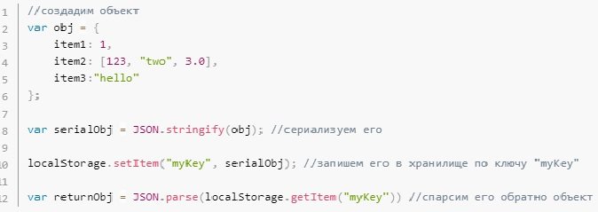
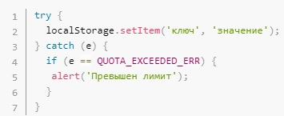

Чтобы понять, что такое localStorage, просто представьте, что где-то у вас в браузере (еще раз подчеркну, в браузере, т.е вся информация будет храниться в браузере, откроем приложение через IE и информации уже не будет) встроен такой объект, которым мы можем пользоваться. При этом данный объект не очищает значения, которые мы туда запишем, если мы перезагрузим страницу или даже совсем закроем браузер.
Также хочется отметить, что localStorage отлично работает и с вложенными структурами, например, объектами.
Вы также должны знать, что браузеры выделяют 5мб под localStorage. И если вы его превысите — получите исключение QUOTA_EXCEEDED_ERR. Кстати, c его помощью можно проверять есть ли в вашем хранилище еще место.
